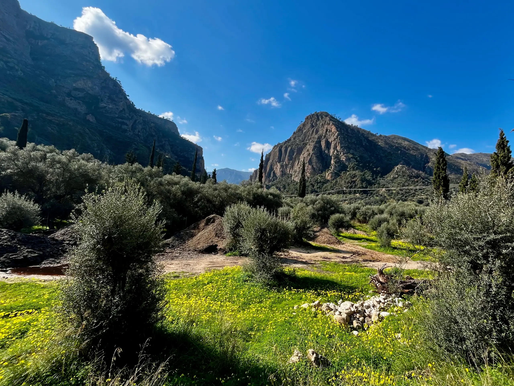
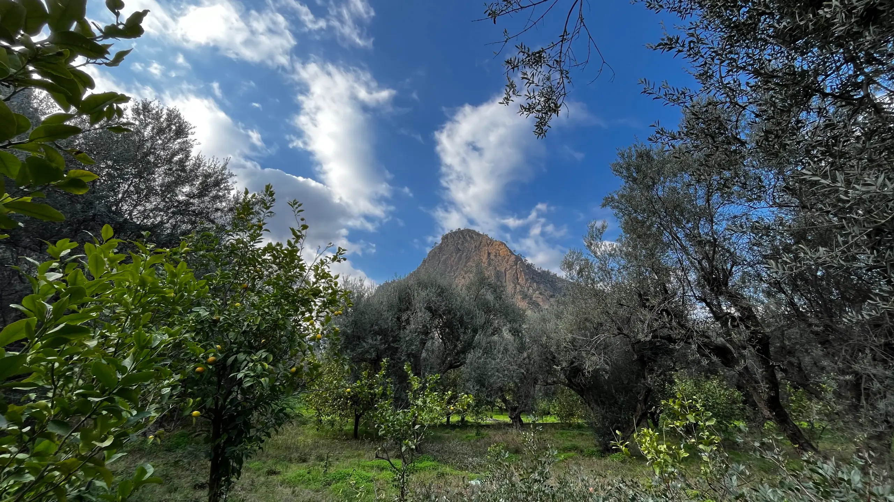
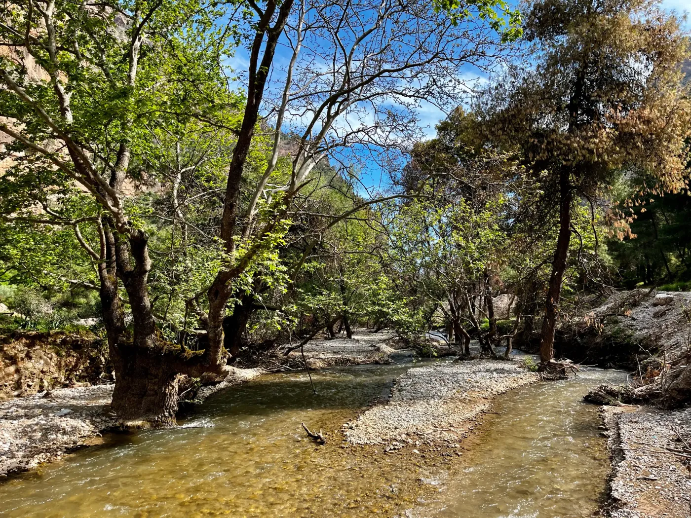
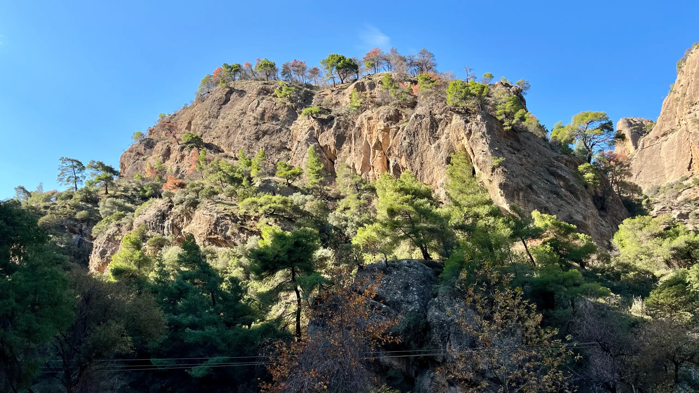

1896
Ξεκινά η κατασκευή της γραμμής, ένα τεχνικό έργο-σταθμός μέσα στο φαράγγι.
Ζήστε μία από τις πιο εντυπωσιακές σιδηροδρομικές διαδρομές της Ευρώπης μέσα από το Φαράγγι του Βουραϊκού UNESCO Global Geopark.
Κύλισε για να ξεκινήσει το ταξίδι
Από την ακτή ως τα αλπικά χωριά, η γραμμή του Οδοντωτού ξεδιπλώνεται σαν κινηματογραφικό οδοιπορικό.
Ιστορικός οδοντωτός σιδηρόδρομος που ενώνει το παραθαλάσσιο Διακοπτό με τα ορεινά Καλάβρυτα.
Το φαράγγι του Βουραϊκού είναι ένα από τα πιο δραματικά και επιβλητικά τοπία της Ελλάδας.
Η αμαξοστοιχία ανεβαίνει από τη θάλασσα στα βουνά, ακολουθώντας το ποτάμι και τις χαράδρες.
Μια οπτική διαδρομή στο τοπίο του Βουραϊκού πριν συνεχίσεις στην εμπειρία του φαραγγιού.








Απόκρημνοι βράχοι, καμπές του ποταμού και πέτρινα γεφύρια συνθέτουν ένα από τα πιο καθηλωτικά σιδηροδρομικά τοπία.
Ξεκινά η κατασκευή της γραμμής, ένα τεχνικό έργο-σταθμός μέσα στο φαράγγι.
Πραγματοποιούνται τα πρώτα δρομολόγια ανάμεσα σε Διακοπτό και Καλάβρυτα.
Ο Οδοντωτός παραμένει μία από τις πιο εντυπωσιακές ορεινές σιδηροδρομικές εμπειρίες της Ευρώπης.
Εκεί όπου η θάλασσα συναντά το βουνό, το Διακοπτό γίνεται η πύλη για το ταξίδι του Οδοντωτού.
Ο ιστορικός σταθμός από όπου ξεκινά η διαδρομή.
Μικρή έκθεση αφιερωμένη στην ιστορία της γραμμής.
Χαλάρωσε δίπλα στη θάλασσα πριν ή μετά το ταξίδι.
Δες όλη τη γραμμή από το Διακοπτό έως τα Καλάβρυτα, με στάσεις και σημεία ενδιαφέροντος.
Διαδραστικός χάρτης με Leaflet, εικονίδια τρένου και popups σταθμών.
Οργάνωσε την εκδρομή σου με τα βασικά στοιχεία πριν επιβιβαστείς.
Περίπου 1 ώρα μέσα στο φαράγγι του Βουραϊκού.
Διακοπτό - Καλάβρυτα με ενδιάμεσες στάσεις.
Άνοιξη και Φθινόπωρο για ιδανικό καιρό και χρώματα.
Εξερεύνησε παραλίες, τοπικές γεύσεις και αυθεντικές εμπειρίες πριν ή μετά το ταξίδι με τον Οδοντωτό.
Discover Diakopto Σχεδίασε το Ταξίδι σου